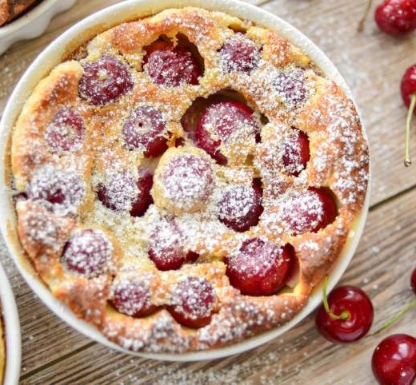

Tarta de cereza

Ingredientes
- 2 1/2 tazas de harina, para la masa
- 1/2 cucharaditas de azúcar, para la masa
- 1/2 cucharaditas de sal, para la masa
- 180 gramos de mantequilla, para la masa
- 7 cucharadas de agua, para la masa
- 1 frasco de mermelada Smucker's® de cereza, 349 g, para el relleno
suficiente de huevo, para barnizar
Cómo hacer Tarta de cereza:
- Bate la harina, el azúcar, la sal y la mantequilla hasta obtener una textura arenosa.
- Después vierte el agua poco a poco y continúa batiendo hasta obtener una masa bien integrada.
- Deja reposar en refrigeración por 15 minutos.
- Extiende la masa, forra un molde para tarta y vierte la Mermelada Smucker's® de cereza sobre la base.
- Reserva.
- Extiende el resto de la masa, corta tiras gruesas, entrelaza para formar una red y
coloca sobre la tarta con la Mermelada Smucker's® de cereza.
- Cierra presionando en las orillas.
- Barniza la tarta con el huevo y hornea a 180 °C por 45 minutos.